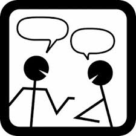

Communicate

Announcements The front page of the course’s web site is also the announcement page. Most of the announcements will point to small corrections to the weekly projects and responses to general email inquiries. Consult it at least once per day.
Office Hours
Name
Office Hours
WVH
Matthias
matthias @ ccs.neu.edu
T 05:00–06:30
308 B
Jason
jhemann @ northeastern.edu
TBD
320
All TAs will hold on-line office hours so that you can see each other’s face.
Name
Office Hours
benjaminlgreenman@gmail.com
TBD
Suzanne Becker
becker.su@husky.neu.edu
TBD
julbinb@gmail.com
TBD
Kanika Rana
rana.k@husky.neu.edu
TBD
Peter Abbondanzo
abbondanzo.p@husky.neu.edu
TBD
Mownika Asokan
asokan.m@northeastern.edu
TBD
Dhaval Dedhia
dedhia.d@northeastern.edu
TBD
Evan Hiroshige
hiroshige.e@husky.neu.edu
TBD
Akanksha Gupta
gupta.aka@husky.neu.edu
TBD
Ritika Gupta
gupta.ritika@husky.neu.edu
TBD
Deepak Kumar
kumar.de@husky.neu.edu
TBD
Mohan Shobana
shobana.m@northeastern.edu
TBD
Felicia Zhang
zhang.fel@northeastern.edu
TBD
If these hours cause conflicts, send email to the staff member you wish to see and set up a 1-1 appointment.
Piazza You may use Piazza to discuss the course material and the homework problems (in general terms). We may answer a question once. Anybody who asks the same or a similar question again shows disrespect for our time; so we will not answer an already-answered question a second time.
If an answer demands a correction to a homework assignment, the change will be announced on the course homepage.
Email You are welcome to send email to the course staff and you are almost always guaranteed to get an answer within 24 hours, If you send email to other addresses, we will ignore them because they violate the course specifications, and learning to live up to specifications is critical.
Help You may see anyone with questions concerning the design of code to solve a weekly homework problem.
But, because we don’t know all the languages you chose and know all of them to different degrees, we cannot and will not help you with the details of your chosen language. The point of letting you choose is to let you figure out how to find, distill, and apply language-specific resources. You will quickly see how to adapt this to the languages that your future employers choose for you.